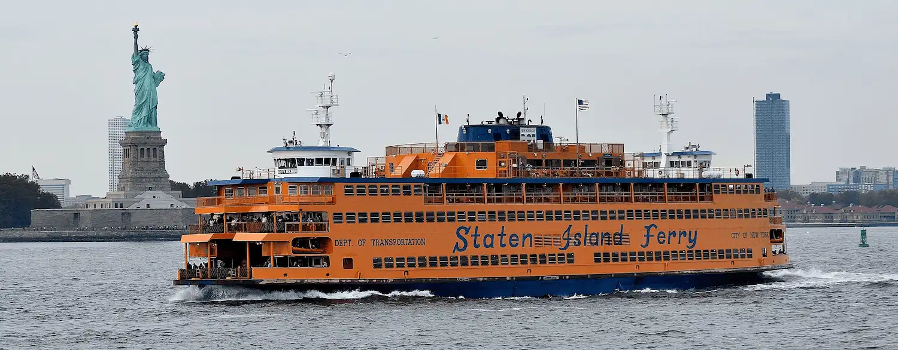
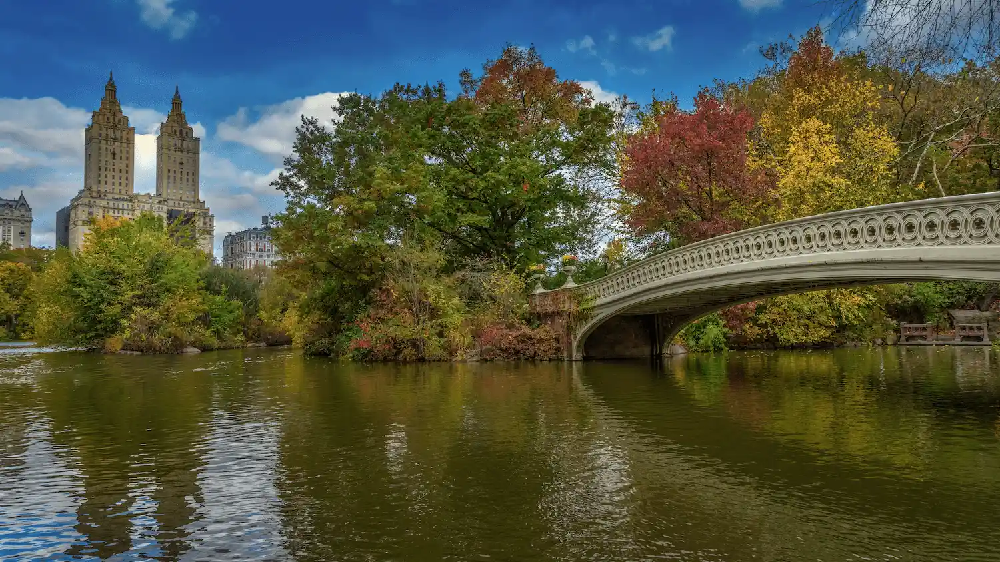
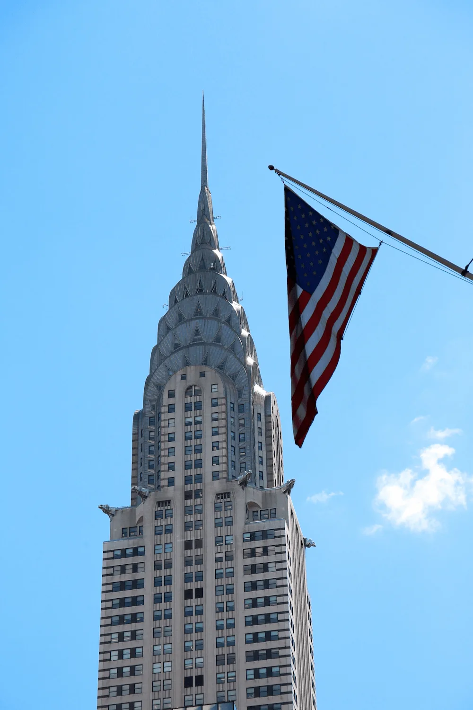
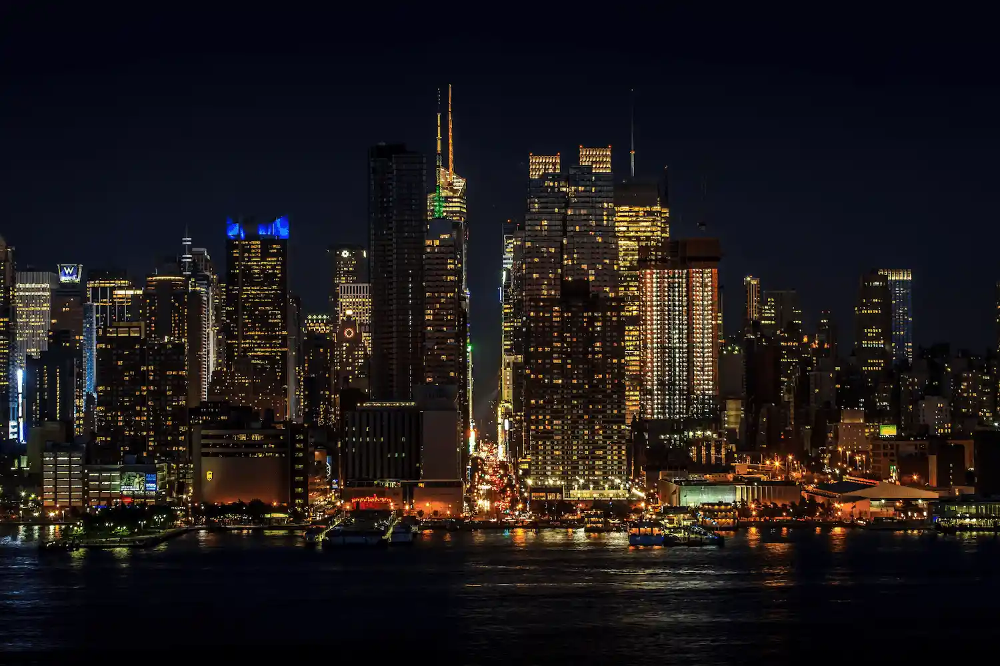
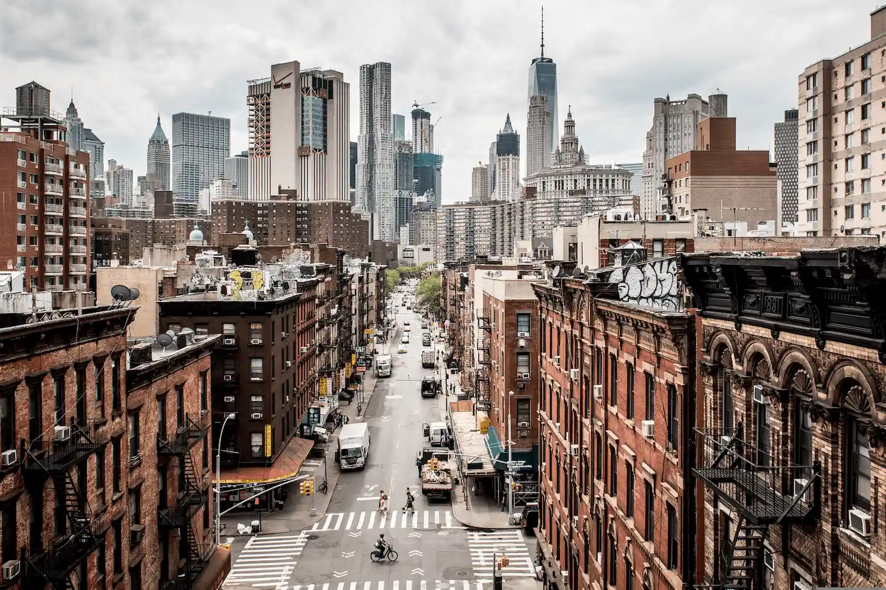
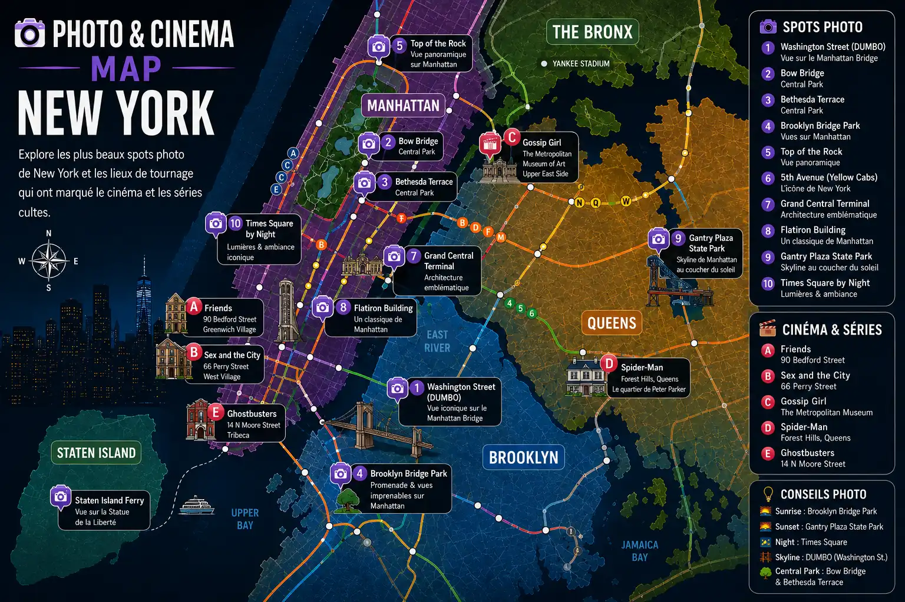

New York Never Stops
Explore New York through iconic rooftops, NBA games, Broadway shows, the NYC subway and its legendary skyline.
Times Square • NBA • Broadway • Central Park • Manhattan
The New York subway makes it easy to explore Manhattan and Brooklyn.
NBA, Yankees baseball, NFL games and major sporting events are part of the New York experience.
Discover the best views of Manhattan and its iconic rooftops.
World-famous shows, Times Square and a nightlife scene unlike anywhere else.

From iconic landmarks and legendary shows to breathtaking viewpoints, New York offers some of the most memorable experiences in the world.

Enjoy a free ferry ride between Manhattan and Staten Island while taking in views of the Statue of Liberty and the New York skyline. A must-do experience for discovering the city from the water.

The green heart of Manhattan, Central Park is the perfect place to walk, cycle or simply enjoy a peaceful escape surrounded by skyscrapers.
Walking across the Brooklyn Bridge offers exceptional views of the Manhattan skyline while allowing you to experience one of New York’s most iconic landmarks.
With suspended observation decks, spectacular mirrors and breathtaking views of Manhattan, SUMMIT delivers one of the most impressive experiences in New York.
View Tickets →
A true icon of the New York skyline, the Empire State Building offers one of the finest panoramic views of Manhattan and remains a symbol of the city.
View Tickets →Broadway is one of New York’s must-see experiences. With MJ The Musical, immerse yourself in the world of Michael Jackson through a spectacular production featuring music, dance and outstanding performances.
View the Show →Fly above Manhattan, Central Park, the Hudson River and the Statue of Liberty to admire New York from a spectacular perspective and enjoy an unforgettable experience.
Book the Flight →
Sail around Manhattan and discover the skyline, iconic bridges and the Statue of Liberty from the water, especially magical at sunset.
Book the Cruise →With its 24-hour subway system, iconic yellow taxis and ferry crossings offering spectacular views of Manhattan, getting around New York is part of the experience itself.
The New York subway connects Manhattan, Brooklyn, Queens and the Bronx at all hours. Fast, affordable and iconic, it is the most efficient way to explore New York like a local.
Explore →Activate your mobile plan before you even arrive and enjoy reliable internet access for maps, bookings and navigation throughout the city.
Explore →Riding in a yellow taxi is one of New York’s most iconic experiences. It’s an authentic way to travel through Manhattan surrounded by skyscrapers, legendary avenues and city lights.
Explore →Choosing the right neighborhood is essential for making the most of your New York trip. From the energy of Manhattan to the stunning views of Brooklyn and the lively streets of SoHo, each area offers a different side of the city.
The ideal choice for a first visit to New York. You'll be close to Times Square, Broadway, the Empire State Building and numerous subway lines connecting you to the entire city.
Perfect for enjoying a more local atmosphere while taking in some of the best views of the Manhattan skyline. The neighborhoods of DUMBO and Williamsburg are especially popular.
One of New York’s trendiest neighborhoods. With stylish boutiques, art galleries, fashionable cafés and iconic architecture, SoHo attracts travelers looking for a sophisticated urban atmosphere.
Located between Central Park and the Hudson River, this residential neighborhood offers a quieter and more authentic atmosphere. An excellent option for discovering a more relaxed side of New York while staying close to major attractions.
From legendary street food to historic steakhouses, some places are as much a part of New York’s identity as its skyscrapers and yellow taxis.
Since 1888, this Lower East Side institution has served one of the most famous pastrami sandwiches in the world. A must-visit destination for anyone looking to experience a piece of New York culinary history.
Discover →Open in Brooklyn since 1887, Peter Luger is one of the most legendary steakhouses in the United States. Its famous porterhouse steak attracts locals, celebrities and visitors from around the world.
Discover →With its historic décor and unique atmosphere, Keens is one of Manhattan’s great institutions. An experience that transports visitors to another era of New York.
Discover →From iconic NBA arenas to legendary baseball stadiums, New York is one of the world's great sports capitals. Attending a sporting event here is an experience in itself.
Watching the Knicks play in the world's most famous basketball arena is a must-do experience for fans of sports and American culture.
View Tickets →Experience the unique atmosphere of American baseball at Yankee Stadium, one of the most iconic sporting venues in the United States.
View Tickets →The Rangers energize Manhattan every season. A unique opportunity to discover the intensity and passion of North American hockey.
Discover →Every summer, the world's top players gather in New York for one of the most prestigious tennis tournaments on the planet.
Discover →New York is a city of many faces. Behind its legendary skyline lie neighborhoods with unique identities, each offering a different atmosphere shaped by skyscrapers, art, history and local life.

The beating heart of New York. Times Square, the Empire State Building, Broadway and Manhattan’s most famous skyscrapers are all concentrated in this essential neighborhood for first-time visitors.
Former industrial buildings transformed into art galleries, trendy boutiques and fashionable cafés make SoHo one of New York’s most elegant and creative neighborhoods.
Located at the foot of the Brooklyn Bridge, DUMBO offers some of the best views of Manhattan. Its cobblestone streets, converted warehouses and artistic atmosphere attract both visitors and locals.
With its brick townhouses, tree-lined streets and rich cultural heritage, Greenwich Village represents authentic New York. An iconic neighborhood for lovers of history, music and local life.
Between Central Park and the Hudson River, the Upper West Side charms visitors with its understated elegance, historic buildings and distinctly New York residential atmosphere.
New York is arguably the most filmed city in the world. From cult TV series to Hollywood blockbusters, some neighborhoods have become just as famous as the characters themselves. It's a unique way to discover the city through locations that have shaped generations of viewers.
Head to Greenwich Village to see the iconic apartment building used for the exterior shots of the series. The neighborhood still retains the warm and friendly atmosphere that made Friends so beloved.
📍 90 Bedford Street
Follow in Carrie Bradshaw's footsteps through the West Village. Elegant streets, trendy boutiques and iconic cafés make this neighborhood inseparable from the world of the series.
📍 66 Perry Street
Explore the Upper East Side and discover the show's most famous locations, from the Metropolitan Museum of Art to the prestigious avenues that embody New York's most glamorous side.
📍 1000 5th Avenue (The Met)
From the streets of Queens to the skyscrapers of Manhattan, discover the locations that inspired the adventures of the famous superhero and immerse yourself in the world of one of Marvel's most iconic characters.
📍 Forest Hills, Queens
The famous Ghostbusters firehouse has become a pilgrimage site for fans of the cult movie. A must-see stop for movie lovers visiting New York.
📍 14 N Moore Street, Tribeca
When the sun goes down, New York reveals another side of its personality. Between bright billboards, panoramic rooftops, historic jazz clubs and legendary performances, the city keeps buzzing long into the night.
It's impossible not to be amazed by the giant screens and dazzling lights of Times Square. At night, Manhattan's iconic crossroads becomes one of the most spectacular and energetic places in the city.
📍 Times Square, Midtown Manhattan
Enjoying a drink while overlooking the illuminated skyline is one of New York's most iconic experiences. Rooftops offer exceptional views of the city's skyscrapers and lights.
📍 Midtown & Lower Manhattan
The birthplace of New York jazz, Greenwich Village is home to some of the most famous clubs in the world. An authentic immersion into the musical atmosphere that shaped the city's cultural history.
📍 Greenwich Village
As theaters light up and crowds fill the streets of Midtown, Broadway reveals its full magic. A night in New York is never quite complete without a show.
📍 Theatre District
From the iconic streets of Brooklyn to breathtaking Manhattan viewpoints, New York offers some of the most photographed urban landscapes in the world. Explore the best places to capture the skyline, yellow taxis, legendary bridges and the city's unique energy.

New York is a fascinating destination, but it is also an excellent starting point for exploring some of the most iconic cities and landscapes in the northeastern United States. From American history and Atlantic coastlines to natural wonders, several getaways are well worth the trip.
Discover the capital of the United States and its iconic landmarks: the White House, the Capitol, the Lincoln Memorial and the famous museums of the National Mall. A must-do excursion for history and American politics enthusiasts.
Book the Excursion →The birthplace of American independence, Philadelphia charms visitors with its historic heritage, the famous Liberty Bell, lively neighborhoods and the steps made famous by the movie Rocky.
Book the Excursion →Just a few hours from Manhattan, discover Long Island’s beaches, the elegant coastal villages of the Hamptons and a much more relaxed atmosphere than the hustle and bustle of New York City.
Book the Excursion →One of North America's most spectacular natural wonders. Niagara Falls offers an unforgettable experience with breathtaking scenery and boat cruises that bring you close to the powerful waterfalls.
Book the Excursion →New York combines urban energy, cultural diversity and an iconic skyline unlike anywhere else in the world.
Times Square, Central Park, Broadway, Brooklyn and Manhattan offer completely different experiences within a single city.
The New York subway makes it easy to travel between Manhattan, Brooklyn and the other boroughs.
Pizzerias, rooftops, street food spots and premium restaurants can be found throughout the city.
Broadway, Central Park, Times Square, NBA games and rooftop bars are must-see experiences.